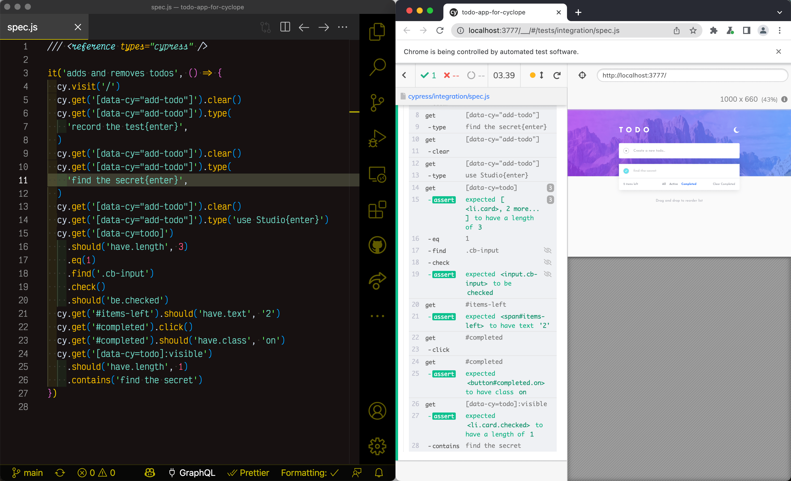

You can configure JavaScript code auto-formatting with Prettier to work per-project. This allows you to get a consistent formatting without thinking or arguing about it. This blog post shows how to configure Prettier to work from command line, from VSCode and from Git hooks.
You can find the sample project with different Prettier settings configured per-subfolder at bahmutov/prettier-config-example.
- Why Prettier?
- Setup
- Settings
- VSCode setup
- Format files from CLI
- Format staged files on commit
- Catch mis-formatted files on CI
- Common problems
- Tips
- Use Eslint with Prettier
- Common ESLint problems
- Other languages
- Chrome extension
- Run Prettier inside GitHub Action
Why Prettier?
Prettier reformats your JavaScript code consistently and (arguably) in way that is easy to read and understand. It takes whatever copy/pasted code snippets you put into your file and makes it look the same as the rest of the code. By using Prettier your team skips ALL disagreements about spacing, variable declarations, semi-colons, trailing commas, etc. The code just magically gets to the format you pick.
You can use Prettier from command line, or from your code editor whenever you paste or save a file. I prefer to use two solutions described in this blog post:
- format the file from VSCode every time I save it
- format the changed files on Git commit before committing them
Let me show you how to do both.
Setup
When setting up Prettier it is important to configure it per-project. Not every project uses the same code style, thus it is important to respect the style of whatever project you are currently working in. The demo repo bahmutov/prettier-config-example has two subfolders, each with its distinct code style, enforced by Prettier. In reality, each of your repos will have its style; I am using subfolders in order to keep the example simple.
I assume you are using NPM and have package.json file inside the repository. Install Prettier
1 | npm install --save-dev --save-exact prettier |
At the root of the project create the Prettier configuration file. In my example I have two subfolders, and there is a configuration file in each subfolder:
1 | prettier-config-example/ |
I like using JSON configuration format so my code editor helps me. In fact, VSCode understands the Prettier configuration file format via the built-in json schema. So when I edit projectA/.prettierrc.json file, I get intelligent tooltips.

Settings
Prettier tries to enforce the same code style without 100s of options, thus there are just a few settings you can change. Here are settings I am using in the first project to make it look "traditional" ES5
1 | { |
The second project uses more modern style without semi-colons and with trailing commas.
1 | { |
VSCode setup
To use the Prettier we have just installed from VSCode we need to install the Prettier VSCode extension:
- Launch VS Code Quick Open (Ctrl+P)
- Run the following command
1 | ext install esbenp.prettier-vscode |
Because you might have global settings related to code formatting, I prefer having in each repository a file with local workspace VSCode settings. I commit this file .vscode/settings.json to source control to make sure everyone uses the same extension to format the code.
1 | { |
Now every time we save a JavaScript file, it will be formatted using Prettier automatically. Here is me formatting projectA/index.js file by saving it.

Notice the double quotes, semi-colons, etc - Prettier has applied the settings from projectA/.prettierrc.json. It also split long object across multiple lines to make it easier to read.
The same JavaScript code in projectB/index.js gets formatted by Prettier using different local settings and ends up looking different.

Single quotes, no semi-colons, trailing commas.
Tip: I love formatting code on "Save", but I hate formatting code on "Paste" - because it always adds extra line breaks. So I highly recommend the following VSCode settings
1 | { |
Format files from CLI
Formatting every file as you save it is nice, but we can also format ALL source files at once using Prettier CLI. In the package.json add a script to format files matching the mask and to write them back to disk.
1 | { |
Run this NPM script and the files will be formatted to follow the Prettier style.
1 | $ npm run format |
If you want to format files with several extensions, list them using curly braces and commas. If you need to find all files in all subfolders, use ** syntax. For example, to format all .ts and .tsx files in the src folder use:
1 | prettier --write 'src/**/*.{ts,tsx}' |
Format staged files on commit
Whenever we work with files locally, we might accidentally commit them without proper styling. That's where Git hooks and formatting staged files comes in handy. To consistently format all files before committing and then commit changes, I recommend using husky + lint-staged combination of tools.
1 | npm i -D husky lint-staged |
Now configure pre-commit hook to run Prettier against staged JavaScript files. In the package.json set the following
1 | { |
See lint-staged code formatting documentation.
If you try to commit changed JavaScript files, they will automatically be formatted and re-staged, ensuring only pretty JavaScript code is committed. In the Git commit shortcut output below, the "Running tasks..." messages comes from the lint-staged tool.
1 | $ g done "add husky and lint-staged" |
Of course, you can skip the Git pre-commit hook by committing with -n flag.
Update when using husky@4 and lint-staged@10 the transformed files are added to the commit automatically. For example to format JavaScript and Markdown files on commit:
1 | { |
Catch mis-formatted files on CI
Using stop-build
You can really enforce the formatting before pushing code to the central repository by running Prettier on CI and then detecting any changed files. Just run stop-build after running Prettier.
1 | script: |
If any of the source files were reformatted by Prettier, the stop-only will detect changed source files using Git information and will exit with an error. It will list the changed files, something like this:
1 | ⚠️ there are 2 changed files |
Using Prettier
Prettier has built-in command --check that validates code files against formatting. Using it from a script in package.json file:
1 | { |
Then on CI we can call the script right after npm install
1 | script: |
Let's say one of the files has not been formatted.
1 | $ npm run check |
Common problems
Nothing happens on save
You are saving a file in VSCode ... and the code does not change. This could be due to three issues:
- Make sure local workspace settings have auto-format on save enabled. Open
.vscode/settings.jsonfile and confirm:- VSCode Prettier extension is configured as the default formatter.
- Formatting on save is enabled
1 | { |
- Prettier extension might be disabled by VSCode. Make sure the word "Prettier" appears on the Status Bar and has check mark symbol next to it. To check:
- Right click on the Status Bar. Make sure the "Prettier" extension appears there is displayed.

- Make sure there is a checkmark next to the "Prettier" in the Status Bar. Sometimes after enabling the extension, it is loaded, but not enabled.

One thing I have noticed that sometimes saving a file enables Prettier if the .vscode/settings.json have the extension enabled for this workspace. For example in this animation I am saving the file with double quotes around a string, and magically the Prettier extension gets the check mark and does its job. Don't ask.

If you click on the "Prettier" extension word in the status bar, it should open the Prettier output tab. It shows what Prettier extension executes, and often shows the problem. For example, the screenshot below shows that Prettier did not run because the project does not have Prettier configuration file like .prettierrc.

If everything else fails, quit VSCode and start it again.
Code formatting is wrong
Here is a little animation that shows a file being saved with Prettier setting "trailingComma: true", yet the comma gets deleted somehow.

Check if there are OTHER code formatting extensions installed and disable them for this workspace. For some reason, VSCode can use globally installed extension overwriting local setting. Don't ask. In my case, I had "Prettier-Standard" extension enabled globally. After disabling the "Prettier-Standard" for the current workspace, Prettier extension started working as expected.

Why can't VSCode save the list of disabled extensions in .vscode/settings.json?
Tips
Print width
Typically I use the default print width of 80 characters. But when I do my screen casts, I need both the code and the application side by side. Thus for those examples, I set the print width to 60.
1 | { |

Looks very nice!
Ignoring files
Sometimes you have files that should not be formatted: auto-generated source files, saved snapshots, etc. You can list file masks to ignore in file .prettierignore. For example, to ignore all JavaScript files in snapshots folders use
1 | # do not run Prettier against JavaScript files |
Saving without formatting
If you ever work in someone else's project, please respect their formatting. In order to avoid reformatting the entire file when you save it from VSCode, save it without formatting. Run "Command + Shift + P" to open the Command Palette and type "save without" until you see "File: Save without Formatting" command - use that.

Temporarily disable formatting
There is also an extension that temporarily disables format on save feature called Formatting Toggle. Install it in your VSCode and whenever you want to temporarily disable Prettier on save, click on the "Formatting" toggle in the status bar.

Only format configured projects
In the VSCode global settings, set this option to only allow running Prettier in the folders with Prettier config file.
1 | Prettier: Require Config |

I definitely recommend setting this global option to avoid accidentally changing how the code looks in the projects that do not want to use your or any Prettier settings.
Ignore parts of files
I love using range ignore to disable formatting parts of file. For example, to stop Prettier from reformatting Markdown tables use:
1 | <!-- prettier-ignore-start --> |
In code, you can tell Prettier to ignore the next AST node by adding // prettier-ignore comment. For example, in the next test we want to show the array input as a Tic-Tac-Toe board
1 | it('returns O for second row of O', () => { |
Use Eslint with Prettier
Prettier reformats JavaScript code to follow certain style, it does not check the meaning of the code. For example, Prettier happily reformats the following wrong code.

Static linters, like ESLint can catch the assignment to a constant variable, so we need both:
- Prettier will reformat the code to be consistent in style
- ESLint will analyze the meaning of code and catch potential problems
Disable style rules in ESLint
ESLint runs a long list of rules against the code, and some of these rules are stylistic, and can conflict with Prettier's style. Thus we need to configure ESLint to skip those rules. This configuration is in module eslint-config-prettier. Install it
1 | npm i -D eslint eslint-config-prettier |
and can be added to your project .eslintrc.json file. ESLint will not run without a valid configuration file.
1 | { |
Now when you run ESLint against this file
1 | const name = 'Joe'; name = 'Mary' |
Then ESLint will catch the const assignment error; it will also catch that the variable name is never used after assignment.
1 | npx eslint projectC/index.js |
ESLint and React
If you want to check React code that uses JSX, import / export keywords, then install a plugin eslint-plugin-react
1 | npx i -D eslint-plugin-react |
And configure .eslintrc.json
1 | { |
Integrate ESLint in VSCode
Since we are using VSCode, it makes sense to install ESLint VSCode extension called dbaeumer.vscode-eslint
Open Command Pallette with Command + P
1 | ext install dbaeumer.vscode-eslint |
Enable this extension in VSCode workspace settings
1 | { |
JavaScript files should now show ESLint errors right inside VSCode editor.

You can see these errors for yourself by opening projectC/index.js in VSCode from the example repo.
Run Prettier from ESLint
Since ESLint can detect and fix many of the errors it detects automatically, let's tell ESLint to run Prettier too. Here is the recommended setup
Install ESLint Prettier config and plugin
1 | npm i -D eslint-config-prettier eslint-plugin-prettier |
Point ESLint at the recommended settings which include Prettier styles
1 | { |
Notice in the screenshot below how ESLint warnings in VSCode editor include style errors from Prettier.

If we run ESLint with --fix flag, it will use Prettier to auto format code, solving both stylistic and semantic problems.

If you decide to use ESLint with Prettier rules and have configured husky to run lint-staged, point it at eslint --fix instead of prettier --write.
VSCode + ESLint + Prettier setup
Let's configure VSCode to use ESLint to auto-fix found issues, including Prettier. The workspace settings use dbaeumer.vscode-eslint.
plugin v1 version (old)
1 | { |
plugin v2 version (current)
1 | { |
The animation shows how saving the file fixes both style and lint problems.

VSCode + ESLint + Prettier + TypeScript setup
ESLint can lint TypeScript files through typescript-eslint, and Prettier can format TypeScript code. Let's set it up.
First, if you have previous installed TSLint extension vscode-tslint for VSCode, uninstall it - let ESLint do everything.
Second, install a new parser and plugin modules
1 | npm i -D @typescript-eslint/parser @typescript-eslint/eslint-plugin |
Then set the VSCode workspace settings to lint TypeScript files
1 | { |
Set the ESLint options. Parsing files will be done using @typescript-eslint/parser, and we need @typescript-eslint plugin.
1 | { |
And now you should see ESLint + Prettier errors and warnings in VSCode


Note: there is a bug in VSCode + ESLint extension where Prettier is not found. If you open Prettier console you can see the error, there is an open issue

So we see the lint and style errors, yet cannot reformat the code automatically on save. To work around this issue, use NPM script command.
1 | { |
Run this command and it should reformat the TS files and fix most ESLint issues.

Use Prettier + ESLint + Cypress
One final touch. If you write Cypress end-to-end tests, there is an official cypress-io/eslint-plugin-cypress plugin that can catch some common test mistakes. You can find an example "test" in project-with-Cypress/index.js file.
First, install the plugin
1 | npm i -D eslint-plugin-cypress |
Then extend ESLint settings
1 | { |
Let's say your test tries to get back an element using cy.get command.
1 | // typical Cypress test |
This WON'T work - cy.get does not return an element, like a Promise, the found element will be passed down the command chain. Notice how ESLint shows an error if you try to assign the value of the cy.get command.

Catch exclusive tests
If you are writing Cypress or Mocha tests, you might accidentally leave it.only or describe.only exclusive tests. The build pipeline will be forever green giving you a false sense of confidence. You can catch exclusive tests using eslint-plugin-mocha.
See example in subfolder 'project-with-mocha' of the demo repo.
First, let's use the Mocha plugin and set the environment and globals.
1 | { |
Second, let's try linting a spec file with an exclusive test
1 | describe('Mocha tests', () => { |
1 | ../node_modules/.bin/eslint . |
Nice, by default the mocha/no-exclusive-tests rules gives a warning. I recommend running lint step in pre-commit hook, where a warning is enough. From the pre-push Git hook I recommend making this rule an error.
1 | ../node_modules/.bin/eslint . --rule 'mocha/no-exclusive-tests: error' |
Common ESLint problems
Disable a rule
Sometimes you need to temporarily disable an ESLint rule. You can disable the rule for the entire file, a portion of a file, or just one line (my favorite!). For example, when showing a function signature, but not using the second argument config, we can prevent the ESLint from complaining:
1 | // eslint-disable-next-line no-unused-vars |
To disable a rule in the same line
1 | module.exports = (on, config) => { // eslint-disable-line no-unused-vars |
To disable a rule in a portion of the file
1 | /* eslint-disable no-unused-vars */ |
To disable a rule in the entire file (but be careful!), add to the top of the file:
1 | /* eslint-disable no-unused-vars */ |
For more, see the blog post How to disable an ESLint rule
Errors shown for async keyword
Sometimes ESLint reports a problem around async keyword.

ESLint's parser does not understand that you are trying to use ES2017 syntax. Set the parser option in .eslintrc.json file to handle the async / await syntax.
1 | { |
Other languages
Format other languages with Prettier
Prettier can format many languages: JavaScript, JSON, Markdown, HTML, CSS, etc. Here is formatting CSS for example.

Format JSON files with Prettier
You can configure Prettier and its VSCode extension to format your JSON files. Since there is already a default JSON formatter built into VSCode, you need to tell VSCode to specifically use esbenp.prettier-vscode to format JSON files. Here is a sample project settings file.
1 | { |

Use custom settings overrides
Here is a nice feature - you can set custom Prettier settings for some files. For example, we can use 2 spaces to indent by default, but 4 spaces to indent code blocks inside Markdown files, and 6 spaces to indent JSON files. Just because.
1 | { |
Let's save a JSON file.

And here is saving a Markdown with a code block - which gets automatically formatted using Prettier with 4 spaces per tab.

Chrome extension
There is now Chrome Prettier extension that can format code blocks in text areas. Seems for now it is limited to StackOverflow and GitHub.
Run Prettier inside GitHub Action
GitHub Actions are now generally available - and they can do lots of interesting things, including running Prettier on every push and if there are any changes, committing the code and pushing it to the repo. In essence, they are doing the hard work for you! Read Trying GitHub Actions blog post for full details, here is the relevant CI YML file from bahmutov/gh-action-with-prettier repo.
1 | name: Prettier |
Beautiful, and on every push, if there are any format changes, the code gets updated and pushed, which you can see from the list of commits.